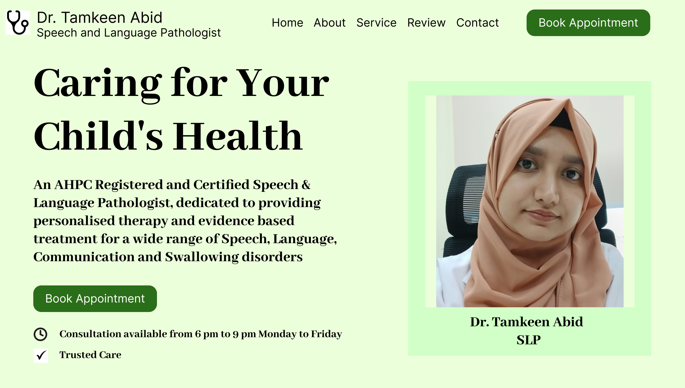
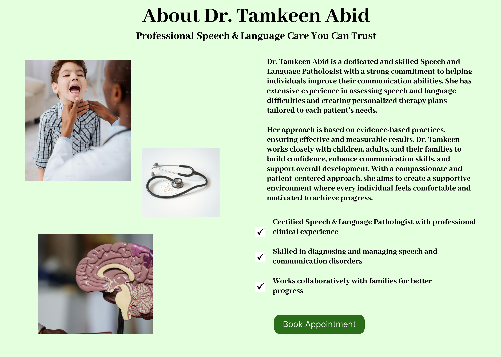
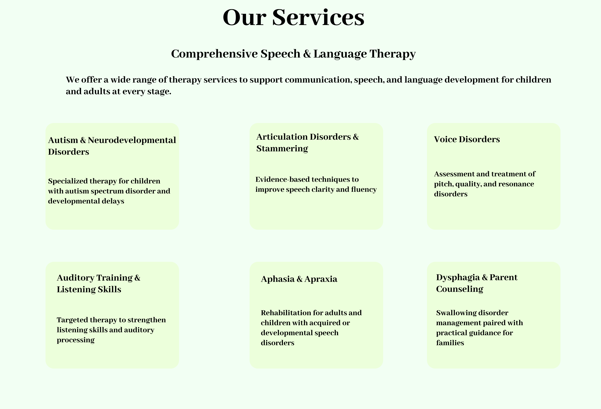
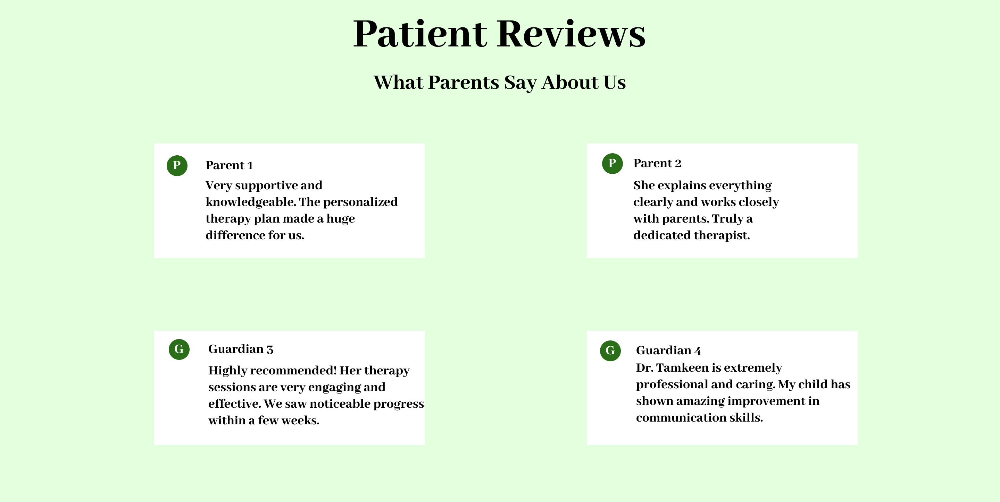
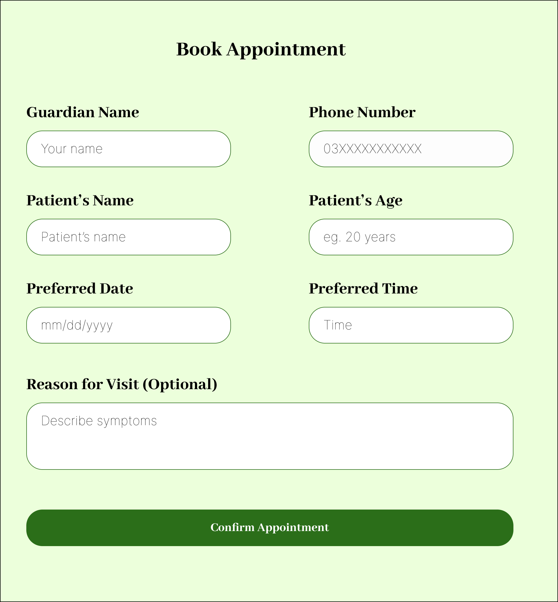
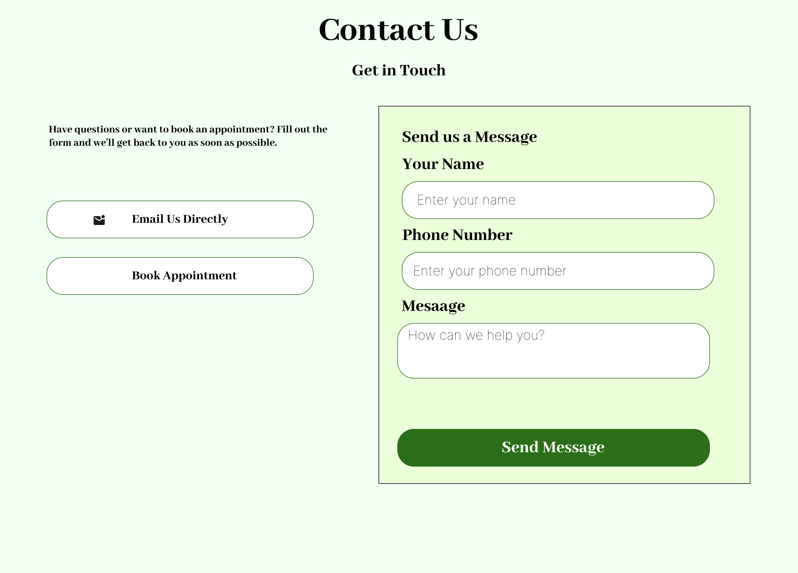

A professional website designed for a Speech and Language Pathology practice, focused on making it easy for visitors to understand the services and book an appointment.

Many small healthcare practices don't have a professional online presence, which makes it hard for potential clients to learn about their services or trust them before reaching out. Tamkeen SLP needed a clean, welcoming website where visitors could easily understand the services offered and feel confident booking an appointment.
I started by thinking about what a visitor would want to know first — what services are offered, who the therapist is, and how to get in touch. I planned the site around clear sections: a welcoming homepage, a services page, and a simple way to contact or book an appointment. After building the website, I documented the full design in Figma, mapping out each page and how they connect.



I chose calming, professional colors to build trust, since healthcare visitors often feel anxious or unsure. I kept the layout simple and structured, with clear headings so visitors could quickly find the information they needed. I made sure the design felt warm and approachable, not cold or overly clinical.


Working on this project taught me how to design for trust — especially in healthcare, where visitors need to feel confident before reaching out. I learned how to balance information (services, reviews, contact) across a single page without making it feel overwhelming. This project also helped me understand how small design choices, like calming colors and clear section breaks, can make a real difference in how comfortable a visitor feels.